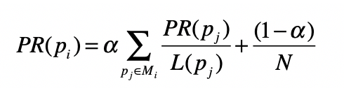
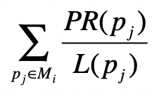
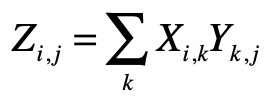
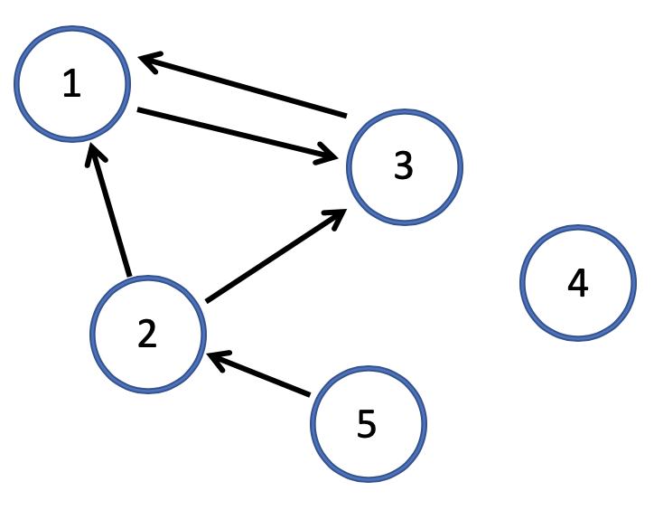
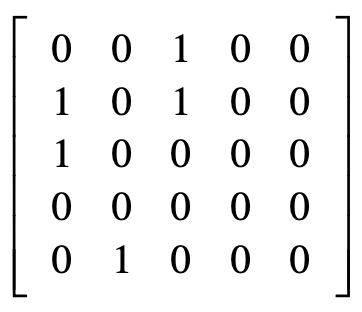
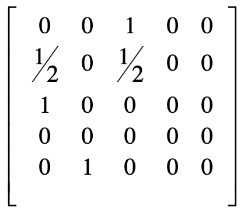
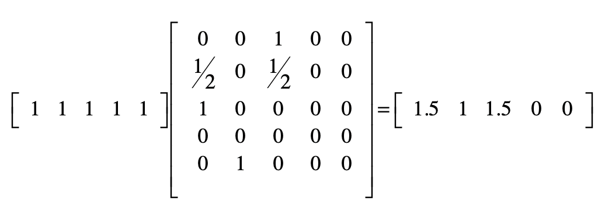
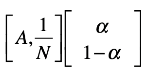
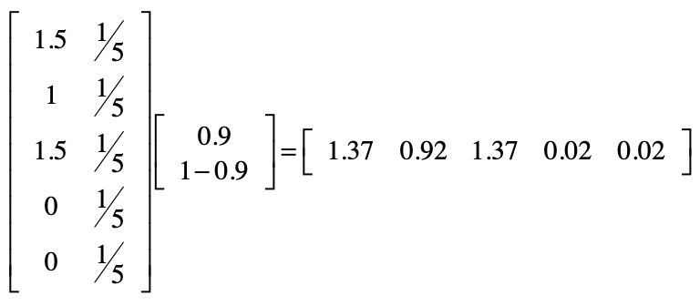

- 01 二进制：不了解计算机的源头，你学什么编程.md
- 02 余数：原来取余操作本身就是个哈希函数.md
- 03 迭代法：不用编程语言的自带函数，你会如何计算平方根？.md
- 04 数学归纳法：如何用数学归纳提升代码的运行效率？.md
- 05 递归（上）：泛化数学归纳，如何将复杂问题简单化？.md
- 06 递归（下）：分而治之，从归并排序到MapReduce.md
- 07 排列：如何让计算机学会“田忌赛马”？.md
- 08 组合：如何让计算机安排世界杯的赛程？.md
- 09 动态规划（上）：如何实现基于编辑距离的查询推荐？.md
- 10 动态规划（下）：如何求得状态转移方程并进行编程实现？.md
- 11 树的深度优先搜索（上）：如何才能高效率地查字典？.md
- 12 树的深度优先搜索（下）：如何才能高效率地查字典？.md
- 13 树的广度优先搜索（上）：人际关系的六度理论是真的吗？.md
- 14 树的广度优先搜索（下）：为什么双向广度优先搜索的效率更高？.md
- 15 从树到图：如何让计算机学会看地图？.md
- 16 时间和空间复杂度（上）：优化性能是否只是“纸上谈兵”？.md
- 17 时间和空间复杂度（下）：如何使用六个法则进行复杂度分析？.md
- 18 总结课：数据结构、编程语句和基础算法体现了哪些数学思想？.md
- 19 概率和统计：编程为什么需要概率和统计？.md
- 20 概率基础（上）：一篇文章帮你理解随机变量、概率分布和期望值.md
- 21 概率基础（下）：联合概率、条件概率和贝叶斯法则，这些概率公式究竟能做什么？.md
- 22 朴素贝叶斯：如何让计算机学会自动分类？.md
- 23 文本分类：如何区分特定类型的新闻？.md
- 24 语言模型：如何使用链式法则和马尔科夫假设简化概率模型？.md
- 25 马尔科夫模型：从PageRank到语音识别，背后是什么模型在支撑？.md
- 26 信息熵：如何通过几个问题，测出你对应的武侠人物？.md
- 27 决策树：信息增益、增益比率和基尼指数的运用.md
- 28 熵、信息增益和卡方：如何寻找关键特征？.md
- 29 归一化和标准化：各种特征如何综合才是最合理的？.md
- 30 统计意义（上）：如何通过显著性检验，判断你的A_B测试结果是不是巧合？.md
- 31 统计意义（下）：如何通过显著性检验，判断你的A_B测试结果是不是巧合？.md
- 32 概率统计篇答疑和总结：为什么会有欠拟合和过拟合？.md
- 33 线性代数：线性代数到底都讲了些什么？.md
- 34 向量空间模型：如何让计算机理解现实事物之间的关系？.md
- 35 文本检索：如何让计算机处理自然语言？.md
- 36 文本聚类：如何过滤冗余的新闻？.md
- 37 矩阵（上）：如何使用矩阵操作进行PageRank计算？.md
- 38 矩阵（下）：如何使用矩阵操作进行协同过滤推荐？.md
- 39 线性回归（上）：如何使用高斯消元求解线性方程组？.md
- 40 线性回归（中）：如何使用最小二乘法进行直线拟合？.md
- 41 线性回归（下）：如何使用最小二乘法进行效果验证？.md
- 42 PCA主成分分析（上）：如何利用协方差矩阵来降维？.md
- 43 PCA主成分分析（下）：为什么要计算协方差矩阵的特征值和特征向量？.md
- 44 奇异值分解：如何挖掘潜在的语义关系？.md
- 45 线性代数篇答疑和总结：矩阵乘法的几何意义是什么？.md
- 46 缓存系统：如何通过哈希表和队列实现高效访问？.md
- 47 搜索引擎（上）：如何通过倒排索引和向量空间模型，打造一个简单的搜索引擎？.md
- 48 搜索引擎（下）：如何通过查询的分类，让电商平台的搜索结果更相关？.md
- 49 推荐系统（上）：如何实现基于相似度的协同过滤？.md
- 50 推荐系统（下）：如何通过SVD分析用户和物品的矩阵？.md
- 51 综合应用篇答疑和总结：如何进行个性化用户画像的设计？.md
- 导读：程序员应该怎么学数学？.md
- 开篇词 作为程序员，为什么你应该学好数学？.md
- 数学专栏课外加餐（一） 我们为什么需要反码和补码？.md
- 数学专栏课外加餐（三）：程序员需要读哪些数学书？.md
- 数学专栏课外加餐（二） 位操作的三个应用实例.md
- 结束语 从数学到编程，本身就是一个很长的链条.md
37 矩阵（上）：如何使用矩阵操作进行PageRank计算？
你好，我是黄申。今天我来说说矩阵。
前面我说过，矩阵由多个长度相等的向量组成，其中的每列或者每行就是一个向量。从数据结构的角度来看，我们可以把向量看作一维数组，把矩阵看作二维数组。
具有了二维数组的特性，矩阵就可以表达二元关系了，例如图中结点的邻接关系，或者是用户对物品的评分关系。而通过矩阵上的各种运算操作，我们就可以挖掘这些二元关系，在不同的应用场景下达到不同的目的。今天我就从图的邻接矩阵出发，展示如何使用矩阵计算来实现PageRank算法。
回顾PageRank链接分析算法
在讲马尔科夫模型的时候，我已经介绍了PageRank链接分析算法。所以，在展示这个算法和矩阵操作的关系之前，我们快速回顾一下它的核心思想。
PageRank是基于马尔科夫链的。它假设了一个“随机冲浪者”模型，冲浪者从某张网页出发，根据Web图中的链接关系随机访问。在每个步骤中，冲浪者都会从当前网页的链出网页中，随机选取一张作为下一步访问的目标。此外，PageRank还引入了随机的跳转操作，这意味着冲浪者不是按Web图的拓扑结构走下去，只是随机挑选了一张网页进行跳转。
基于之前的假设，PageRank的公式定义如下：

其中，\(p\_{i}\)表示第\(i\)张网页，\(M\_{i}\)是\(p\_{i}\)的入链接集合，\(p\_{j}\)是\(M\_{i}\)集合中的第\(j\)张网页。\(PR\_{(p\_{j})}\)表示网页\(p\_{j}\)的PageRank得分，\(L\_{(p\_{j})}\)表示网页\(p\_{j}\)的出链接数量，\(\\frac{1}{L\_{(p\_{j})}}\)就表示从网页\(p\_{j}\)跳转到\(p\_{i}\)的概率。\(α\)是用户不进行随机跳转的概率，\(N\)表示所有网页的数量。
PageRank的计算是采用迭代法实现的：一开始所有网页结点的初始PageRank值都可以设置为某个相同的数，例如1，然后我们通过上面这个公式，得到每个结点新的PageRank值。每当一张网页的PageRank发生了改变，它也会影响它的出链接所指向的网页，因此我们可以再次使用这个公式，循环地修正每个网页结点的值。由于这是一个马尔科夫过程，所以我们能从理论上证明，所有网页的PageRank最终会达到一个稳定的数值。整个证明过程很复杂，这里我们只需要知道这个迭代计算的过程就行了。
简化PageRank公式
那么，这个计算公式和矩阵操作又有什么联系呢？为了把问题简化，我们暂时不考虑随机跳转的情况，而只考虑用户按照网页间链接进行随机冲浪。那么PageRank的公式就简化为：

这个公式只包含了原公式中的\(Σ\\frac{PR\_{(p\_{j})}}{L\_{(p\_{j})})}\)部分。我们再来对比看看矩阵点乘的计算公式。

以上两个公式在形式上是基本一致的。因此，我们可以把\(Σ\\frac{PR\_{(p\_{j})}}{L\_{(p\_{j})})}\)的计算，分解为两个矩阵的点乘。一个矩阵是当前每张网页的PageRank得分，另一个矩阵就是邻接矩阵。所谓邻接矩阵，其实就是表示图结点相邻关系的矩阵。
假设\(x\_{i,j}\)是矩阵中第\(i\)行、第\(j\)列的元素，那么我们就可以使用\(x\_{i,j}\)表示从结点\(i\)到结点\(j\)的连接，放到PageRank的应用场景，\(x\_{i,j}\)就表示网页\(p\_{i}\)到网页\(p\_{j}\)的链接。最原始的邻接矩阵所包含的元素是0或1，0表示没有链接，而1表示有链接。
考虑到PageRank里乘积是\(\\frac{1}{L\_{(p\_{j})}}\)，我们可以对邻接矩阵的每一行进行归一化，用原始的值（0或1）除以\(L\_{(p\_{j})}\)，而\(L\_{(p\_{j})}\)表示有某张网页\(p\_{j}\)的出链接，正好是矩阵中\(p\_{j}\)这一行的和。所以，我们可以对原始的邻接矩阵，进行基于行的归一化，这样就能得到每个元素为\(\\frac{1}{L\_{(p\_{j})}}\)的矩阵，其中\(j\)表示矩阵的第\(j\)行。注意，这里的归一化是指让所有元素加起来的和为1。
为了方便你理解，我用下面这个拓扑图作为例子给你详细解释。

基于上面这个图，原始矩阵为：

其中第i行、第j列的元素值表示从结点i到j是不是存在链接。如果是，那么这个值为1；否则就为0。
按照每一行的和，分别对每一行进行归一化之后的矩阵就变为：

有了上述这个邻接矩阵，我们就可以开始最简单的PageRank计算。PageRank的计算是采用迭代法实现的。这里我把初始值都设为1，并把第一次计算的结果列在这里。

好了，我们已经成功迈出了第一步，但是还需要考虑随机跳转的可能性。
考虑随机跳转
经过上面的步骤，我们已经求得\(Σ\\frac{PR\_{(p\_{j})}}{L\_{(p\_{j})})}\)部分。不过，PageRank引入了随机跳转的机制。这一部分其实也是可以通过矩阵的点乘来实现的。我们把\(Σ\\frac{PR\_{(p\_{j})}}{L\_{(p\_{j})})}\)部分用\(A\)表示，那么完整的PageRank公式就可以表示为：
\(PR\_{(P\_{i})}=αA+\\frac{1-α}{N}\)
于是，我们可以把上述公式分解为如下两个矩阵的点乘：

我们仍然使用前面的例子，来看看经过随机跳转之后，PageRank值变成了多少。这里\(α\)取0.9。

我们前面提到，PageRank算法需要迭代式计算。为了避免计算后的数值越来越大甚至溢出，我们可以进行归一化处理，保证所有结点的数值之和为1。经过这个处理之后，我们得到第一轮的PageRank数值，也就是下面这个行向量：
[0.37027027 0.24864865 0.37027027 0.00540541 0.00540541]
接下来，我们只需要再重复之前的步骤，直到每个结点的值趋于稳定就可以了。
使用Python进行实现
说到这里，我已经把如何把整个PageRank的计算，转换成多个矩阵的点乘这个过程讲完了。这样一来，我们就可以利用Python等科学计算语言提供的库，来完成基于PageRank的链接分析。为了展示具体的代码，我以之前的拓扑图为例，给你详细讲述每一步。
首先，我们要进行一些初始化工作，包括设置结点数量、确定随机跳转概率的\(α\)、代表拓扑图的邻接矩阵以及存放所有结点PageRank值的数组。下面是一段示例代码，在代码中我提供了注释供你参考。
import numpy as np
# 设置确定随机跳转概率的alpha、网页结点数
alpha = 0.9
N = 5
# 初始化随机跳转概率的矩阵
jump = np.full([2,1], [[alpha], [1-alpha]], dtype=float)
# 邻接矩阵的构建
adj = np.full([N,N], [[0,0,1,0,0],[1,0,1,0,0],[1,0,0,0,0],[0,0,0,0,0],[0,1,0,0,0]], dtype=float)
# 对邻接矩阵进行归一化
row_sums = adj.sum(axis=1) # 对每一行求和
row_sums[row_sums == 0] = 0.1 # 防止由于分母出现0而导致的Nan
adj = adj / row_sums[:, np.newaxis] # 除以每行之和的归一化
# 初始的PageRank值，通常是设置所有值为1.0
pr = np.full([1,N], 1, dtype=float)
之后，我们就能采用迭代法来计算PageRank值。一般我们通过比较每个结点最近两次计算的值是否足够接近，来确定数值是不是已经稳定，以及是不是需要结束迭代。这里为简便起见，我使用了固定次数的循环来实现。如果你的拓扑图比较复杂，需要更多次迭代，我把示例代码和注释列在这里。
# PageRank算法本身是采用迭代方式进行的，当最终的取值趋于稳定后结束。
for i in range(0, 20):
# 进行点乘，计算Σ(PR(pj)/L(pj))
pr = np.dot(pr, adj)
# 转置保存Σ(PR(pj)/L(pj))结果的矩阵，并增加长度为N的列向量，其中每个元素的值为1/N，便于下一步的点乘。
pr_jump = np.full([N, 2], [[0, 1/N]])
pr_jump[:,:-1] = pr.transpose()
# 进行点乘，计算α(Σ(PR(pj)/L(pj))) + (1-α)/N)
pr = np.dot(pr_jump, jump)
# 归一化PageRank得分
pr = pr.transpose()
pr = pr / pr.sum()
print("round", i + 1, pr)
如果成功运行了上述两段代码，你就能看到每个结点最终获得的PageRank分数是多少。
Python中还有一些很不错的库，提供了直接构建拓扑图和计算PageRank的功能，例如networkx（https://networkx.github.io/）。你可以尝试使用这种库，构建样例拓扑图并计算每个结点的PageRank得分，最后和上述代码所计算的PageRank得分进行比较，验证一下上述代码的结果是不是合理。
总结
我们可以把向量看作一维数组，把矩阵看作二维数组。矩阵的点乘，是由若干个向量的点乘组成的，所以我们可以通过矩阵的点乘操作，挖掘多组向量两两之间的关系。
今天我们讲了矩阵的点乘操作在PageRank算法中的应用。通过表示网页的邻接二元关系，我们可以使用矩阵来计算PageRank的得分。在这个应用场景下，矩阵点乘体现了多个马尔科夫过程中的状态转移。
矩阵点乘和其他运算操作，还可以运用在很多其他的领域。例如，我在上一节介绍K均值聚类算法时，就提到了需要计算某个数据点向量、其他数据点向量之间的距离或者相似度，以及使用多个数据点向量的平均值来获得质心点的向量，这些都可以通过矩阵操作来完成。
另外，在协同过滤的推荐中，我们可以使用矩阵点乘，来实现多个用户或者物品之间的相似程度，以及聚集后的相似程度所导致的最终推荐结果。下一节，我会使用矩阵来表示用户和物品的二元关系，并通过矩阵来计算协同过滤的结果。
思考题
在介绍PageRank算法时，我提到了它的计算是一个迭代的过程。这一节我使用了固定次数的循环来实现这一点。请尝试使用计算前后两次PageRank数值的差，来判断是否需要结束迭代。（提示：你可以使用矩阵元素对应的减法，以及在第3讲和加餐2中提到的相对误差。）
欢迎留言和我分享，也欢迎你在留言区写下今天的学习笔记。你可以点击“请朋友读”，把今天的内容分享给你的好友，和他一起精进。
© 2019 - 2023 Liangliang Lee. Powered by gin and hexo-theme-book.